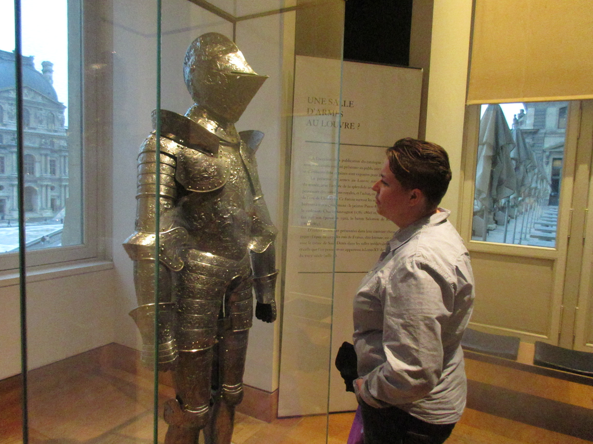

1 / 8
Jen at Denali National Park
2 / 8
Jen hiking Denali National Park
3 / 8

Jen hiking Zion
4 / 8
Jen in London
5 / 8

Jen kayaking
6 / 8

Jen at the Lourve
7 / 8

Jen hiking the Narrows
8 / 8
Jen and the Grand Canyon